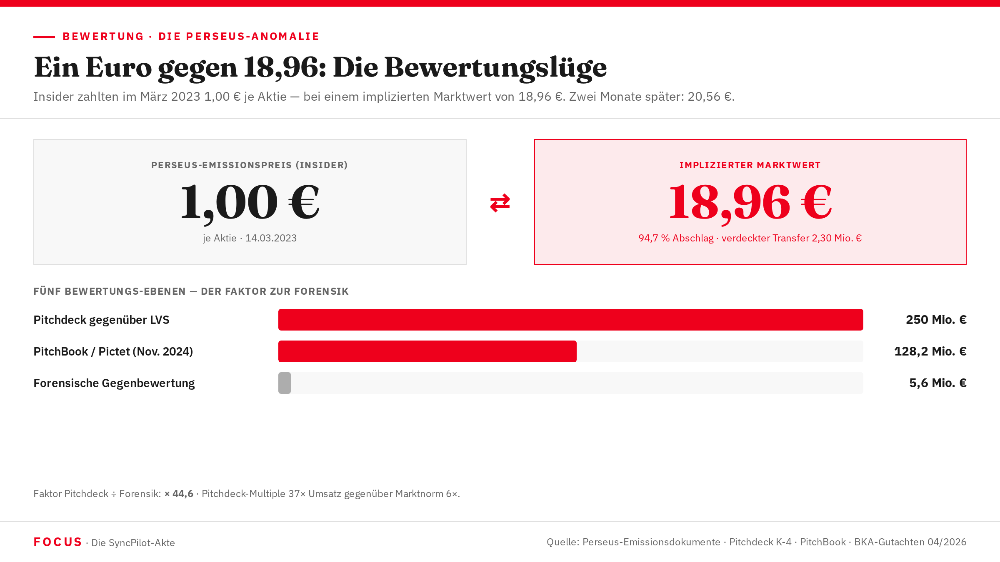

Die Bewertungsfrage
Ein Pitchdeck behauptete 250 Millionen Euro. Ein Emissionspreis zahlte einen Euro. Ein forensisches Gutachten ermittelte 5,6 Millionen. Und Pictet vergab einen Kredit von rund 25 Millionen — auf Basis von was genau?

250 Millionen Euro — das Fundament des Betrugs
In der Geschichte des SyncPilot-Falls gibt es eine Zahl, ohne die nichts funktioniert hätte. Nicht das LVS-Darlehen — denn warum sollte ein vernünftiger Investor 18,75 Millionen in ein Unternehmen stecken, das forensisch 5,6 Millionen wert ist? Nicht die Offshore-Strukturen — denn warum so viel Aufwand für ein Asset ohne signifikanten Wert? Nicht den Pictet-Kredit — denn kein institutioneller Kreditgeber leiht einem Unternehmen Dutzende Millionen bei einem einstelligen Eigenkapitalwert.
Die Zahl, die alles ermöglichte, ist: 250.000.000 Euro.
Das SyncPilot-Pitchdeck aus dem Jahr 2021 weist diese Bewertung aus. Basis: ein Umsatzmultiplikator von 37×. Selbst im Hochzeitsrausch des SaaS-Bewertungsmarktes 2021 war dieser Wert globalen Marktführern mit Milliardenumsätzen — Snowflake, MongoDB, Salesforce — vorbehalten. Für ein bayerisches Software-KMU mit Fokus auf den deutschen Mittelstand ist er schlicht nicht vertretbar. Fakt — Pitchdeck K-4; BKA-Gutachten III.2
Der Marktstandard für vergleichbare europäische B2B-SaaS-Unternehmen 2021: 4× bis 8× Umsatz. Nur bei außergewöhnlichen Kennzahlen (Net Revenue Retention über 120 %, ARR-Wachstum über 50 %) wurden 10× bis 15× erzielt. 37× ist der Faktor 4,6 über dem oberen Ende des realistischen Bereichs — keine optimistische Projektion, sondern eine Zahl aus einer anderen Realität.
„Eine Bewertung ist nicht das, was ein Unternehmen wert ist. Sie ist das, was man einen Investor glauben machen kann, dass es wert ist. Der Unterschied zwischen beiden Zahlen ist der Profit des Betrügers." Aus einer Sachverständigenanhörung im Wirecard-Untersuchungsausschuss des Deutschen Bundestags, 2020 — zitiert in Kapitel 10 der SyncPilot-Akte
Fünf Bewertungs-Ebenen im Vergleich
Das BKA-Gutachten (April 2026) und die forensische Analyse von Sonntag & Partner identifizieren fünf relevante Bewertungspunkte für SyncPilot — fünf Zahlen, die dieselbe Gesellschaft beschreiben, dabei aber um den Faktor 47 auseinanderklaffen.
| # | Ebene / Bewertungsquelle | Wert | Methodik / Multiplikator | Verbindlichkeiten berücksichtigt? | Status |
|---|---|---|---|---|---|
| 1 | Pitchdeck FXB (gegenüber LVS, Mai 2021) | 250 Mio. € | 37× Umsatz — Multiplikator von Weltmarktführern auf ein deutsches KMU angewandt | NEIN | Fakt |
| 2 | Perseus-Emission, impliziert (14.03.2023) | ~5,3 Mio. € | 1,00 €/Aktie × 5.576.031 Aktien — intentionaler Tiefpreis für verdeckten Transfer | NEIN | Fakt — manipuliert |
| 3 | Emission Mai 2023, impliziert | ~114,6 Mio. € | 20,56 €/Aktie × 5.576.031 — Soforterholung zwei Monate nach Perseus: +2.060 % | NEIN | Fakt |
| 4 | PitchBook: PE Growth Round Nov. 2024 (Pictet) | ~128,2 Mio. € | 23,00 €/Aktie × 5.576.031 — Datenpunkt aus PitchBook-Datenbank nach Hogan-Lovells-PM | NEIN | Fakt (PitchBook) Hypothese (Pictet-Basis) |
| 5 | Forensische Gegenbewertung (BKA, April 2026) | 5,6 Mio. € | Substanz- und Ertragswert; 4–6× Umsatz; abzgl. LVS-Verbindlichkeit 18,75 Mio. €; Governance-Diskont 20–40 % | JA | Fakt |
| Vergleich | Faktor |
|---|---|
| Pitchdeck (250 Mio.) vs. Forensik (5,6 Mio.) | × 44,6 |
| Pitchdeck (250 Mio.) vs. Perseus-Implikation (5,3 Mio.) | × 47,2 |
| PitchBook/Pictet (128,2 Mio.) vs. Forensik (5,6 Mio.) | × 22,9 |
| Pitchdeck-Multiple (37×) vs. Marktnorm (6×) | × 6,2 |
| Emission März 2023 (1,00 €) vs. Mai 2023 (20,56 €) | × 20,56 — in zwei Monaten |
Die forensische Gegenbewertung — drei Schichten
Für europäische B2B-SaaS-Unternehmen der SyncPilot-Größenklasse (Jahresumsatz 5–10 Mio. €, Deutschland-Fokus) gilt ein Marktmultiplikator von 4× bis 6× Umsatz. Bei geschätzt 6 Mio. € Jahresumsatz ergibt das einen Enterprise Value von 24–36 Mio. €. Fakt — IDW S1; SaaS-Multiples-DB 2021
Vom Enterprise Value muss das Fremdkapital abgezogen werden. LVS-Verbindlichkeit: 18,75 Mio. € (fällig, nicht bedient). Bei EV 24 Mio. € verbleiben: 5,25 Mio. € Eigenkapitalwert. Das entspricht der BKA-Forensikzahl von 5,6 Mio. €. Fakt — BKA III.2
Alleinvorstand ohne Aufsichtsrat, 60 % Offshore mit unbekannten UBOs, laufende Strafanzeige, aktiver Rechtsstreit — das sind Faktoren, die rational handelnde Käufer zu Abschlägen von 20–40 % bewegen. Dieser Diskont ist in Bewertungsstandards anerkannt und erklärt die konservative forensische Schätzung. Hypothese — Quantifizierung
1,00 € und 18,96 € — derselbe Monat
Am 14. März 2023 gibt SyncPilot 127.885 Aktien an die Perseus GmbH aus. Preis: 1,00 €/Stück. Implizierter Enterprise Value auf dieser Basis: 5,57 Mio. €. Das ist ein Einbruch von 94 bis 97 Prozent gegenüber jedem anderen Bewertungsindikator — ob Pitchdeck, vorangegangene Emissionen oder nachfolgende Runden.
Was ist am 14. März 2023 passiert, dass SyncPilot plötzlich nur noch ein Hundertstel seines anderweitig behaupteten Wertes darstellt?
Die Antwort aus den öffentlich zugänglichen Unterlagen: nichts. Kein Marktschock, kein Kundenverlust, kein Produktversagen. Das Unternehmen hat sich an diesem Tag nicht fundamental verändert. Was sich verändert hat, ist der Emissionspreis.
Zwei Monate später, im Mai 2023, wird die nächste Emission zu 20,56 €/Aktie durchgeführt. Implizierter Enterprise Value: 114,6 Mio. €. SyncPilot ist damit in zwei Monaten um 2.060 Prozent gestiegen — ohne erkennbare operative Grundlage. Der Fachbegriff dafür: manipulierter Bewertungsanker. Fakt — BKA; Cap Table K-8
| Zeitpunkt | Preis/Aktie | Implizierter EV | Status |
|---|---|---|---|
| ~2022 | 18,96 € | ~105 Mio. € | Fakt |
| 14.03.2023 — Perseus | 1,00 € | ~5,3 Mio. € | Fakt — Kollaps |
| Mai 2023 | 20,56 € | ~114,6 Mio. € | Fakt — +2.060 % |
| Nov. 2024 (PitchBook/Pictet) | 23,00 € | ~128,2 Mio. € | Fakt Hyp. |
| Forensik BKA 2026 | Eigenkapitalwert | 5,6 Mio. € | Fakt |
Die Verteidigung behauptete im Gerichtsverfahren, Perseus habe 13 €/Aktie gezahlt. Das impliziert einen EV von ~72,5 Mio. € — einen Wert, der in der gesamten Emissionshistorie nirgends auftaucht. Die Buchhaltung zeigt 1,00 €. Der Widerspruch ist unauflösbar. Fakt — Klageerwiderung K-30
Der rekonstruierte Term Sheet: 25 Mio. € auf welcher Grundlage?
Im November 2024 vergibt Pictet Asset Management über seine European Direct Lending Strategy einen Kredit an die SYNCPILOT-Gruppe — das fünfte Investment dieser Strategie. Berater: Hogan Lovells München (Dr. Thomas Freund), zwölf Anwälte, fünf Praxisbereiche.
Die Strategie-Parameter von Pictet EDL sind öffentlich: Zielgröße pro Transaktion 15–40 Mio. €, Ziel-EBITDA des Kreditnehmers 3–12 Mio. €, typisch Unitranche Senior Debt mit 5–7 Jahren Laufzeit. Fakt — Pictet AM öffentliche Angaben
Der forensisch geschätzte Kreditbetrag: 25 Mio. €. Diese Zahl ergibt sich aus folgender Logik:
Schritt 1 — EBITDA-Basis: Bei geschätztem Jahresumsatz 6–8 Mio. € und einer SaaS-EBITDA-Marge von 20–35 % wäre das realistische EBITDA 1,5–2,8 Mio. € — unterhalb des Pictet-Minimums von 3 Mio. €. Um in die Strategie zu passen, müsste FXB ein deutlich höheres EBITDA präsentiert haben. Dieses Muster — aufgeblähte EBITDA-Darstellung gegenüber Kreditgeber — ist das Pitchdeck-Inflationsmuster aus Kapitel 10, hier auf den Kreditkontext angewandt. Hypothese
Schritt 2 — Leverage-Multiple: Mid-Market Unitranche typisch 4–6× EBITDA. Bei einem FXB-dargestellten EBITDA von 4–5 Mio. € (Pitchdeck-Logik) × 5× = 20–25 Mio. €. Hypothese
Ein Kredit von rund 25 Mio. € an ein Unternehmen mit folgenden Kenndaten:
- Kontostand: 140.391,42 € (nach Perseus-Einzahlung)
- Offene Verbindlichkeit LVS: 18.750.000 € (fällig, nicht bedient)
- Laufende Klage: Az. 112 O 2848/25 (bei Kreditabschluss anhängig oder absehbar)
- Offshore-Gesellschafterstruktur: 60,13 %
entspricht entweder einem Due-Diligence-Versagen oder einer aktiven Täuschung durch FXB. Wenn die LVS-Verbindlichkeit nicht offengelegt wurde: § 265b StGB (Kreditbetrug) — der neunte Tatbestand. Hypothese — Konfidenz 70–80 %
| Parameter | Schätzwert | Status |
|---|---|---|
| Kreditbetrag | ~25 Mio. € | Hypothese |
| Typ | Unitranche Senior Term Loan | Fakt — Strategiestandard |
| Laufzeit | 6 Jahre | Hypothese |
| Zinsmarge (All-in) | EURIBOR + ca. 6,5 % → ~7,75 % | Hypothese |
| Jahreszinsdienst | ~1,94 Mio. € | Hypothese |
| Interest Coverage Ratio (realist. EBITDA) | 0,77× – 1,44× | Fakt — unter Covenant-Minimum 1,5× |
Bewertungslüge, Offshore-Architektur und Geldflüsse — ein sich verstärkendes Dreieck
Ohne 250 Mio. € kein LVS-Darlehen. Ohne LVS-Darlehen kein Kapital zum Plündern. Ohne Pitchdeck kein Pictet. Die überhöhte Bewertung ist das Fundament des Gesamtsystems.
Wer die Gesellschafterliste liest und ZKP, Lapis oder Attegia sieht, sieht nicht FXB. Die Intransparenz schützt die Bewertungsbehauptung, indem sie die tatsächliche Eigentümerstruktur verbirgt — bis Staatsanwälte an maltesische Register klopfen.
Die Bewertungslüge wäre ohne Folgen, wenn kein Geld geflossen wäre. 6,15 Mio. € flossen — innerhalb von fünf Tagen in die Villa Kobelstraße 14a und in unbekannte Zieladressen. Der Kontostand nach zwei Jahren: 140.391,42 €.
§ 264a StGB — Kapitalanlagebetrug: Die Bewertungsangabe von 250 Mio. € (Faktor 44,6 über dem forensisch ermittelten Realwert von 5,6 Mio. €) ist eine unrichtige Angabe über einen für die Investitionsentscheidung erheblichen Umstand. Der Tatbestand des Kapitalanlagebetrugs setzt keinen eingetretenen Schaden voraus — er greift bereits bei der Täuschungshandlung. Vgl. BGH 1 StR 379/08 (04.12.2008). Fakt — gesetzliche Analyse; Hypothese — Subsumtion im konkreten Fall
Das Playbook ist bekannt — der Maßstab nicht
Wirecard-Muster
- Bewertung auf Basis fiktiver/aufgeblähter Umsätze
- Offshore-Architektur in mehreren Jurisdiktionen
- Anwaltskanzleien und Wirtschaftsprüfer — willfährig oder unwissend
- Regulatoren im Glauben gelassen, das Unternehmen sei gesund
- Erhebliches Vermögen in Offshore-Strukturen verschwunden
SyncPilot-Muster
- Bewertung 250 Mio. € auf Basis eines unhaltbaren 37×-Multiplikators (Faktor 44,6 über Realwert)
- Offshore-Architektur: Malta, Luxemburg, Liechtenstein, Schweiz — 61,77 %
- RA Hunstein als Anwalt und Gesellschafter — § 356 StGB
- Pictet-Kredit möglicherweise ohne Offenlegung der LVS-Verbindlichkeit
- Kontostand nach 18,75 Mio. € Zufluss: 140.391,42 €
Die Methode ist identisch. Die Skala ist kleiner. Die Konsequenz ist dieselbe: ein Investor ohne Rückzahlung, ein Unternehmen mit verschleierter Finanzlage, und eine Bewertungsbehauptung, die als Fundament eines sorgfältig geplanten Betrugs diente.